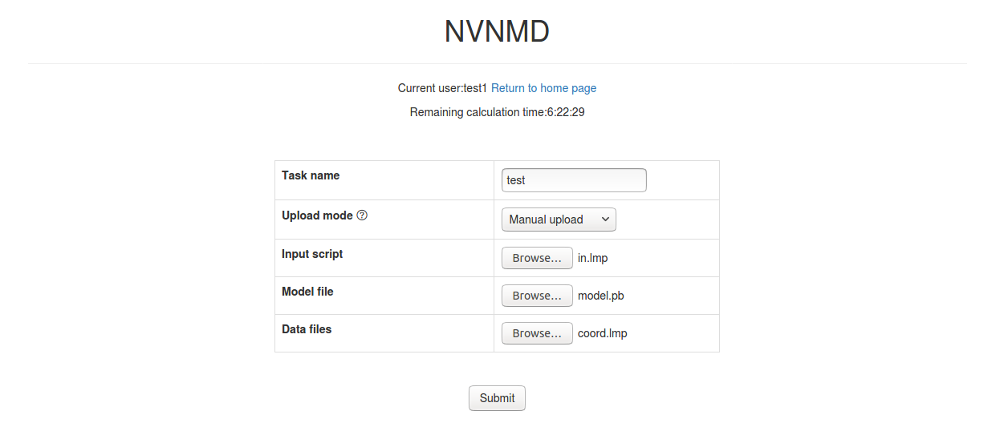

Use NVNMD
1 Introduction
NVNMD stands for non-von Neumann molecular dynamics.
This is the training code we used to generate the results in our paper entitled "Accurate and Efficient Molecular Dynamics based on Machine Learning and Non Von Neumann Architecture", which has been accepted by npj Computational Materials (DOI: 10.1038/s41524-022-00773-z).
Any user can follow two consecutive steps to run molecular dynamics (MD) on the proposed NVNMD computer, which has been released online: (i) to train a machine learning (ML) model that can decently reproduce the potential energy surface (PES); and (ii) to deploy the trained ML model on the proposed NVNMD computer, then run MD there to obtain the atomistic trajectories.
2 Training
Our training procedure consists of not only the continuous neural network (CNN) training, but also the quantized neural network (QNN) training which uses the results of CNN as inputs. It is performed on CPU or GPU by using the training codes we open-sourced online.
To train a ML model that can decently reproduce the PES, training and testing data set should be prepared first. This can be done by using either the state-of-the-art active learning tools, or the outdated (i.e., less efficient) brute-force density functional theory (DFT)-based ab-initio molecular dynamics (AIMD) sampling.
If you just want to simply test the training function, you can use the example in the $deepmd_source_dir/examples/nvnmd directory. If you want to fully experience training and running MD functions, you can download the complete example from the website.
Then, copy the data set to working directory
mkdir -p $workspace cd $workspace mkdir -p data cp -r $dataset data
where $dataset is the path to the data set and $workspace is the path to working directory.
2-1 Input script
Create and go to the training directory.
mkdir train cd train
Then copy the input script train_cnn.json and train_qnn.json to the directory train
cp -r $deepmd_source_dir/examples/nvnmd/train/train_cnn.json train_cnn.json cp -r $deepmd_source_dir/examples/nvnmd/train/train_qnn.json train_qnn.json
The structure of the input script is as follows
{ "nvnmd" : {}, "learning_rate" : {}, "loss" : {}, "training": {} }
2-1-1 nvnmd
The "nvnmd" section is defined as
{ "net_size":128, "sel":[60, 60], "rcut":6.0, "rcut_smth":0.5 }
where items are defined as:
| Item | Mean | Optional Value |
|---|---|---|
| net_size | the size of nueral network | 128 |
| sel | the number of neighbors | integer list of lengths 1 to 4 are acceptable |
| rcut | the cutoff radial | (0, 8.0] |
| rcut_smth | the smooth cutoff parameter | (0, 8.0] |
2-1-2 learning_rate
The "learning_rate" section is defined as
{ "type":"exp", "start_lr": 1e-3, "stop_lr": 3e-8, "decay_steps": 5000 }
where items are defined as:
| Item | Mean | Optional Value |
|---|---|---|
| type | learning rate variant type | exp |
| start_lr | the learning rate at the beginning of the training | a positive real number |
| stop_lr | the desired learning rate at the end of the training | a positive real number |
| decay_stops | the learning rate is decaying every {decay_stops} training steps | a positive integer |
2-1-3 loss
The "loss" section is defined as
{ "start_pref_e": 0.02, "limit_pref_e": 2, "start_pref_f": 1000, "limit_pref_f": 1, "start_pref_v": 0, "limit_pref_v": 0 }
where items are defined as:
| Item | Mean | Optional Value |
|---|---|---|
| start_pref_e | the loss factor of energy at the beginning of the training | zero or positive real number |
| limit_pref_e | the loss factor of energy at the end of the training | zero or positive real number |
| start_pref_f | the loss factor of force at the beginning of the training | zero or positive real number |
| limit_pref_f | the loss factor of force at the end of the training | zero or positive real number |
| start_pref_v | the loss factor of virial at the beginning of the training | zero or positive real number |
| limit_pref_v | the loss factor of virial at the end of the training | zero or positive real number |
2-1-4 training
The "training" section is defined as
{ "seed": 1, "stop_batch": 1000000, "numb_test": 1, "disp_file": "lcurve.out", "disp_freq": 1000, "save_ckpt": "model.ckpt", "save_freq": 10000, "training_data":{ "systems":["system1_path", "system2_path", "..."], "set_prefix": "set", "batch_size": ["batch_size_of_system1", "batch_size_of_system2", "..."] } }
where items are defined as:
| Item | Mean | Optional Value |
|---|---|---|
| seed | the randome seed | a integer |
| stop_batch | the total training steps | a positive integer |
| numb_test | the accuracy is test by using {numb_test} sample | a positive integer |
| disp_file | the log file where the training message display | a string |
| disp_freq | display frequency | a positive integer |
| save_ckpt | check point file | a string |
| save_freq | save frequency | a positive integer |
| systems | a list of data directory which contains the dataset | string list |
| set_prefix | the prefix of dataset | a string |
| batch_size | a list of batch size of corresponding dataset | a integer list |
2-2 Training
Training can be invoked by
# step1: train CNN dp train-nvnmd train_cnn.json -s s1 # step2: train QNN dp train-nvnmd train_qnn.json -s s2
After training process, you will get two folders: nvnmd_cnn and nvnmd_qnn. The nvnmd_cnn contains the model after continuous neural network (CNN) training. The nvnmd_qnn contains the model after quantized neural network (QNN) training. The binary file nvnmd_qnn/model.pb is the model file which is used to performs NVNMD in server [http://nvnmd.picp.vip]
3 Testing
The frozen model can be used in many ways. The most straightforward testing can be invoked by
mkdir test dp test -m ./nvnmd_qnn/frozen_model.pb -s path/to/system -d ./test/detail -n 99999 -l test/output.log
where the frozen model file to import is given via the -m command line flag, the path to the testing data set is given via the -s command line flag, the file containing details of energy, force and virial accuracy is given via the -d command line flag, the amount of data for testing is given via the -n command line flag.
4 Running MD
After CNN and QNN training, you can upload the ML model to our online NVNMD system and run MD there.
4-1 Account application
The server website of NVNMD is available at http://nvnmd.picp.vip. You can visit the URL and enter the login interface (Figure.1).

To obtain an account, please send your application to the email (jie_liu@hnu.edu.cn, liujie@uw.edu). The username and password will be sent to you by email.
4-2 Adding task
After successfully obtaining the account, enter the username and password in the login interface, and click "Login" to enter the homepage (Figure.2).

The homepage displays the remaining calculation time and all calculation records not deleted. Click Add a new task to enter the interface for adding a new task (Figure.3).

- Task name: name of the task
- Upload mode: two modes of uploading results to online data storage, including
Manual uploadandAutomatic upload. Results need to be uploaded manually to online data storage withManual uploadmode, and will be uploaded automatically withAutomatic uploadmode. - Input script: input file of the MD simulation.
In the input script, one needs to specify the pair style as follows
pair_style nvnmd model.pb
pair_coeff * *
- Model file: the ML model named
model.pbobtained by QNN training. - Data files: data files containing information required for running an MD simulation (e.g.,
coord.lmpcontaining initial atom coordinates).
Next, you can click Submit to submit the task and then automatically return to the homepage (Figure.4).

Then, click Refresh to view the latest status of all calculation tasks.
4-3 Cancelling calculation
For the task whose calculation status is Pending and Running, you can click the corresponding Cancel on the homepage to stop the calculation (Figure.5).

4-4 Downloading results
For the task whose calculation status is Completed, Failed and Cancelled, you can click the corresponding Package or Separate files in the Download results bar on the homepage to download results.
Click Package to download a zipped package of all files including input files and output results (Figure.6).

Click Separate files to download the required separate files (Figure.7).

If Manual upload mode is selected or the file has expired, click Upload on the download interface to upload manually.
4-5 Deleting record
For the task no longer needed, you can click the corresponding Delete on the homepage to delete the record.
Records cannot be retrieved after deletion.
4-6 Clearing records
Click Clear calculation records on the homepage to clear all records.
Records cannot be retrieved after clearing.